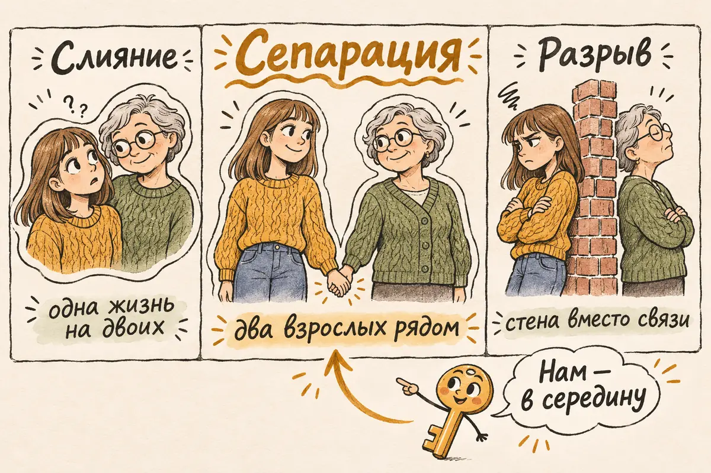
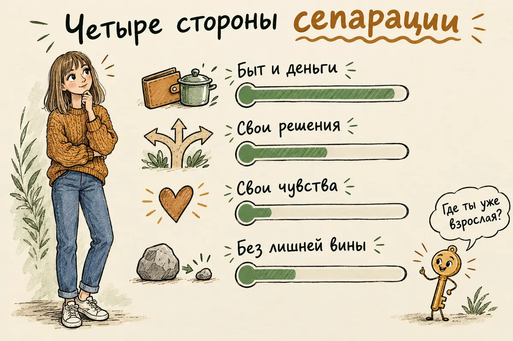
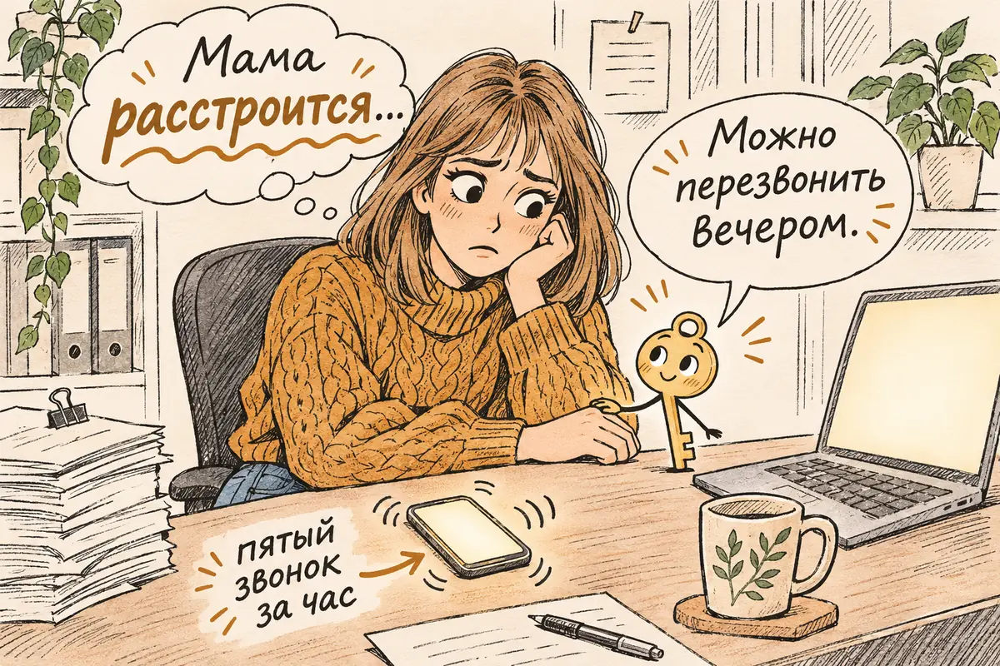
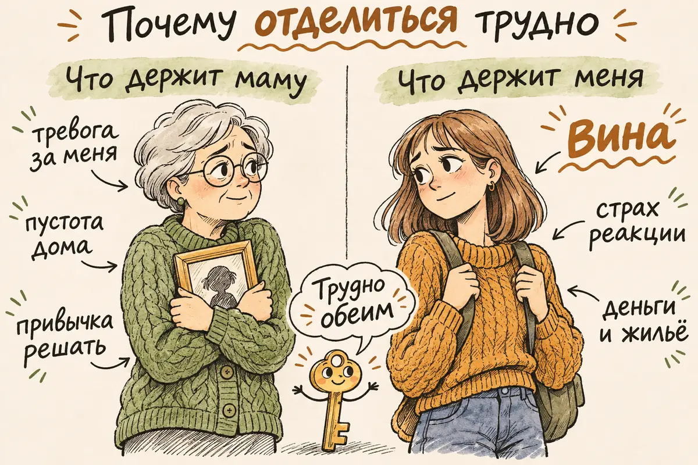
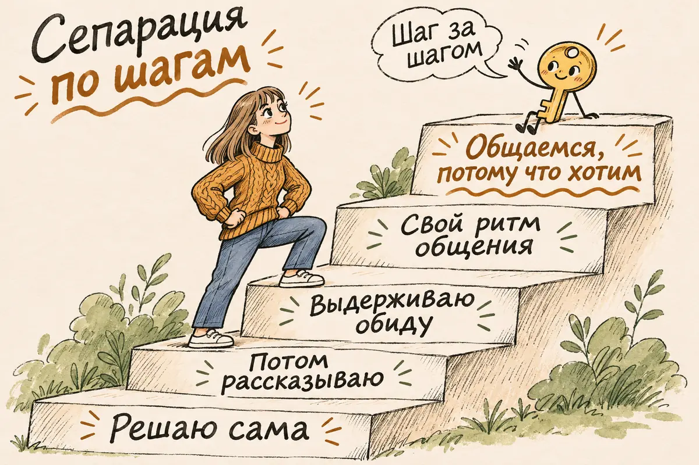
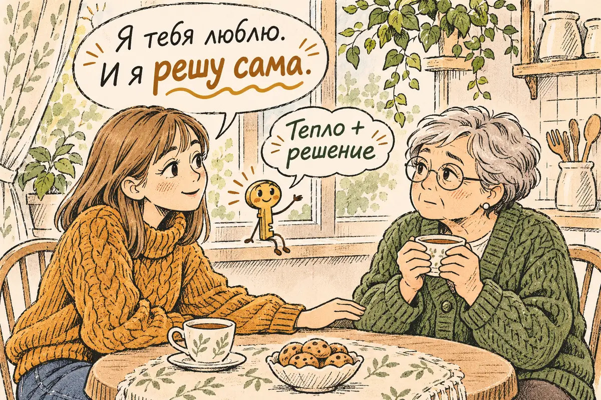
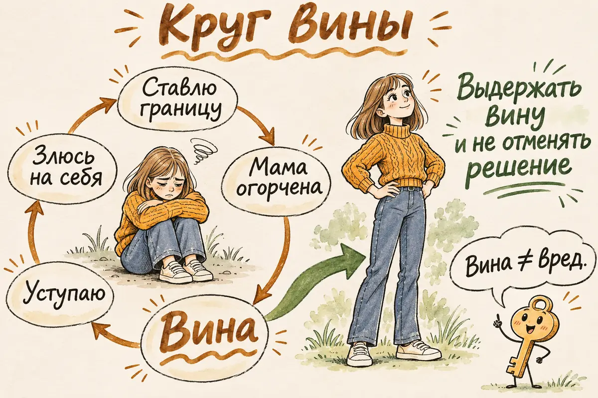
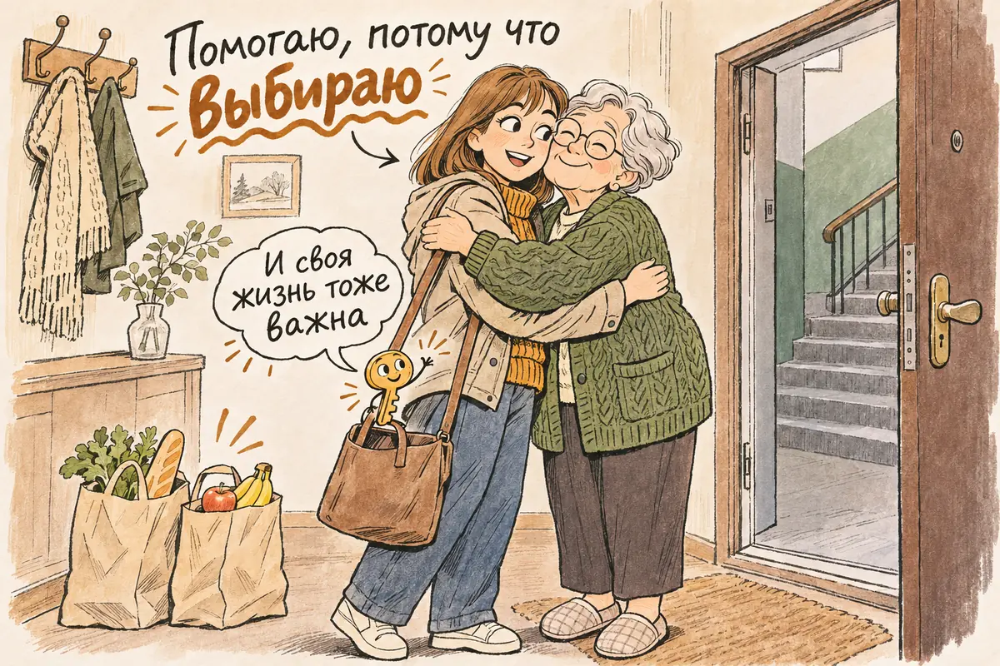

Главная → Блог → Сепарация от родителей
Сепарация от родителей: что это, признаки и как отделиться, не разрывая отношений
Обновлено: 22.11.2026 · Источники проверены: 22.11.2026 · 20 минут чтения
Подготовлено по исследованиям психологии развития и семейных отношений
Сепарация от родителей — это процесс, в котором взрослый человек начинает сам отвечать за свою жизнь: решать, обеспечивать себя, справляться со своими чувствами и иметь собственные взгляды. Это не переезд и не разрыв. Можно жить в одном доме с мамой и быть самостоятельным, а можно жить в другой стране и до сих пор не решаться купить пальто без её одобрения. Сепарация не отменяет близость с родителями, она меняет её форму: вместо отношений «ребёнок — взрослые, которые за него отвечают» появляются отношения взрослых людей.
- Что такое сепарация простыми словами
- Сепарация, слияние и разрыв: в чём разница
- Четыре стороны отделения
- Признаки, что сепарация не завершилась
- Как понять, что сепарация происходит
- Почему отделиться так трудно
- В каком возрасте происходит сепарация
- Как пройти сепарацию: 8 шагов
- Что сказать родителям: готовые фразы
- Что делать с чувством вины
- Если вы живёте с родителями
- Если родители стареют или болеют
- Когда дистанция действительно нужна
- Что не помогает
- Когда обратиться к специалисту
- Частые вопросы
Что такое сепарация простыми словами
Сепарация — это постепенное превращение ребёнка во взрослого, который опирается на себя. В психологии развития этот процесс называют сепарацией-индивидуацией: человек не только отдаляется от родителей, но и становится отдельной личностью со своими желаниями, ценностями и способами справляться с трудностями.
Отделение начинается ещё в детстве: малыш впервые уходит на несколько шагов от мамы, первоклассник сам идёт в школу. Самый заметный этап — подростковый, с протестами и закрытой дверью комнаты. Но на подростковом бунте дело не заканчивается. Протест — это ещё зависимость, только со знаком минус: «сделаю наоборот» так же завязано на мнение родителей, как и «сделаю, как скажут». Взрослая сепарация спокойнее и тише. В ней человек может выслушать родителей, с чем-то согласиться, а с чем-то нет, и решить сам.
Сепарация, слияние и разрыв: в чём разница
Отделиться от родителей не значит от них отказаться. В семейной терапии описывают два способа «не отделиться»: слияние, когда границ между жизнями почти нет, и эмоциональный разрыв, когда человек обрывает связь, потому что рядом с родителями не может оставаться собой. Сепарация — третий вариант между ними.

| Слияние | Сепарация | Разрыв | |
|---|---|---|---|
| Решения | Принимаются вместе или за вас | Принимаете сами, советы выслушиваете | Принимаете назло или «лишь бы не как они» |
| Общение | Из долга и страха, часто по расписанию | По желанию обеих сторон | Сведено к минимуму или прекращено |
| Огорчение родителя | Невыносимо, нужно срочно исправить | Неприятно, но его можно выдержать | Не трогает или вызывает злость |
| Разногласия | Скрываются | Обсуждаются спокойно | Становятся поводом для ссоры |
| Внутри | Вина и тревога | Тепло, иногда грусть | Обида, напряжение, «лучше не вспоминать» |
Физическое расстояние само по себе ничего не говорит о самостоятельности. Можно жить далеко и всё ещё зависеть от родительского одобрения. А можно сознательно сократить или прекратить общение и при этом оставаться внутренне самостоятельным — особенно если отношения были небезопасными. Важнее не расстояние и частота звонков, а то, кто принимает решения о вашей жизни и можете ли вы выбирать безопасную для себя форму отношений.
Сильные чувства после разговора с родителем тоже не приговор. Тяжело может быть и человеку с устойчивыми границами, если в прошлом было давление или унижение. Повод присмотреться другой: когда реакция на родителей раз за разом определяет ваши решения — что сказать, куда поехать, с кем жить.
Четыре стороны отделения
В 1984 году американский психолог Джеффри Хоффман описал психологическое отделение от родителей как четыре разные «независимости»: функциональную, независимость во взглядах, эмоциональную и конфликтную. С тех пор их измеряют по отдельности, потому что у одного человека они идут с разной скоростью: можно давно себя обеспечивать и при этом панически бояться маминого недовольства. В переводе на повседневный язык эти стороны выглядят так.
- Практическая. Вы сами справляетесь с бытом, деньгами, документами, врачами, ремонтом. Не обязательно без помощи, но помощь — это выбор, а не единственный способ выжить.
- Решения и взгляды. У вас есть собственное мнение о работе, партнёре, детях, религии, политике и деньгах, даже если оно не совпадает с родительским.
- Эмоциональная. Вам не нужно одобрение родителей, чтобы чувствовать себя нормально. Их настроение влияет на вас, но не управляет вашим днём.
- Свобода от лишней вины и внутреннего конфликта. Мысли о родителях не тонут в чрезмерной вине, тревоге, ответственности за них, обиде или желании что-то им доказать. Это не значит, что чувств нет вовсе: просто они не захлёстывают.

Чтобы понять, где вы сейчас, ответьте себе на несколько вопросов — честно и без подсчёта баллов. Это не тест и не диагноз, а способ увидеть, с какой стороны начинать: человеку, который сам себя обеспечивает, но не может ни в чём отказать маме, бесполезны советы про финансовую независимость.
- Могу ли я принять важное решение, если родители с ним не согласны?
- Боюсь ли я их расстроить, даже когда никому не причиняю вреда?
- Могу ли я отказать в просьбе, которую не готов выполнить, без долгих оправданий?
- Скрываю ли я обычные события своей жизни из-за ожидаемой реакции?
- Идёт ли родительская помощь с условиями, которые трудно обсуждать?
- Сомневаюсь ли я после спора с родителями, имел ли право решать сам?
Где ответы даются тяжелее всего, там и стоит начинать.
Признаки, что сепарация не завершилась
Ни один признак сам по себе ничего не доказывает: в близких семьях часто созваниваются, советуются и помогают друг другу. Тревожный сигнал — когда это происходит не по желанию, а потому что иначе нельзя, и когда за этим стоят страх, вина или злость.
- Перед важным решением вы обязательно спрашиваете маму или папу, и без их одобрения не решаетесь.
- Скрываете от родителей часть жизни: покупки, отношения, отпуск, — потому что иначе будет скандал или обида.
- Сказать «нет» родителям намного труднее, чем начальнику или друзьям.
- Огорчение мамы ощущается как катастрофа, которую надо срочно исправить.
- Вы отчитываетесь, где вы и с кем, хотя давно взрослый человек.
- В голове звучит родительский голос: «Ты опять транжиришь», «Кому ты такая нужна».
- Ссоры с партнёром нередко начинаются из-за родителей: их визитов, советов, денег, ключей от вашей квартиры.
- Вы чувствуете ответственность за настроение, одиночество или брак родителей.
- После встречи или звонка несколько часов приходите в себя.
- Или наоборот: любое упоминание о родителях вызывает раздражение, и вы годами держите их на расстоянии, но думаете о них постоянно.

Как понять, что сепарация происходит
Сепарация не заканчивается в определённый день, и галочки «готово» у неё нет. Но изменения можно заметить:
- вы принимаете решения, даже если родители с ними не согласны;
- можете спросить совета и не считать его обязательным;
- отказываете в просьбе без многочасовых оправданий;
- не чувствуете себя ответственным за каждое настроение родителей;
- можете принять помощь и спокойно обсудить её условия;
- сохраняете свои взгляды, даже если они отличаются от семейных;
- сами выбираете, как часто и в какой форме общаться.
При этом вы по-прежнему можете грустить, тревожиться, раздражаться или чувствовать вину после трудного разговора. Психологическая самостоятельность не означает, что сложных чувств больше нет. Она означает, что они не решают за вас.
Почему отделиться так трудно
Сепарация трудна с обеих сторон. Родителю предстоит отпустить человека, который много лет был центром его жизни. Взрослому ребёнку — перестать нуждаться в разрешении, которое он получал всю жизнь.

Что происходит у родителей
- Тревога. Для многих родителей контроль — способ справиться со страхом за ребёнка. Пока они знают, где вы, им спокойнее.
- Пустота. Когда дети выросли, у родителя может не оказаться другого смысла: работа закончилась, отношения с партнёром остыли, друзей мало.
- Привычная роль. «Я знаю, как лучше» — это не всегда властность, иногда просто многолетняя привычка, которую никто не пересматривал.
- Психологический контроль. Так исследователи называют давление не на поступки, а на чувства и мысли ребёнка: через вину, обиду, холодность, обесценивание его мнения. Американский психолог Брайан Барбер в 1996 году показал, что именно такой контроль у подростков устойчиво связан с депрессивными симптомами. Обычные правила и присмотр — другое явление, и с подавленностью они так не связаны.
- Гиперопека. Родители, которые решают за взрослого ребёнка его проблемы, звонят преподавателям и работодателям, выбирают за него. В исследовании Лоры Падиллы-Уокер и Ларри Нельсона с участием 438 студентов от 18 до 29 лет такая опека шла рука об руку с теплом и вовлечённостью родителей, но была связана с тем, что ребёнку меньше давали самостоятельности. То есть любовь и излишний контроль часто приходят вместе.
Что происходит у взрослого ребёнка
- Вина. Самая частая причина. Кажется, что жить своей жизнью — значит бросить или предать. Об этом подробнее ниже.
- Роль «родителя для родителя». Психологи называют это парентификацией: ребёнок берёт на себя заботу о взрослом — утешает маму после ссор с отцом, становится ей лучшей подругой, следит за её настроением. Метаанализ 478 исследований (Thompson и коллеги, 2024) показал, что у детей и подростков размытые границы с родителем, особенно слияние и вторжение в личное пространство, связаны с тревогой, подавленностью и проблемами с поведением. Взрослых это исследование не изучало, но в практике часто видно, что выросшему ребёнку с такой историей своя жизнь ощущается как уход с поста.
- Страх не справиться. Когда за тебя долго решали, не хватает опыта ошибаться и разбираться самому.
- Деньги и жильё. Многие не могут съехать или обойтись без помощи родителей по вполне реальным причинам: зарплата, цены на жильё, маленькие дети, болезнь. Стыдиться тут нечего. Сложности начинаются, когда родители считают, что вместе с помощью получают право решать за взрослого ребёнка. В здоровых отношениях поддержка не означает автоматического отказа от самостоятельности.
- Страх реакции. Иногда за трудностью стоит не вина, а опасение, что родитель отреагирует резко: накричит, перестанет общаться, лишит помощи. Если этот страх обоснован, начинать стоит не с разговоров, а с подготовки — об этом ниже.
- Ожидание, что родитель изменится. «Вот когда мама наконец поймёт и признает…» Пока ждёшь этого, отделение стоит на месте.
В каком возрасте происходит сепарация
Строгого возраста нет. Американский психолог Джеффри Арнетт в 2000 году описал период от позднего подросткового возраста до 25 лет и дольше как отдельный этап, «наступающую взрослость»: человек уже не подросток, но учится, пробует разные работы и отношения и ещё не взял на себя все взрослые роли. С тех пор этот период только удлинился: люди дольше учатся и позже начинают зарабатывать, заводят семью и покупают жильё.
Поэтому незавершённая сепарация в 25, 30 и даже 40 лет не редкость и не признак инфантильности. Это просто задача, до которой пока не дошли руки или на которую не хватало сил. Хорошая новость в том, что отделение можно начать в любом возрасте и с любой стороны. Согласие родителей для этого не обязательно, но собственную безопасность учитывать стоит.
Как пройти сепарацию: 8 шагов
Сепарация — не одно решительное событие, а много маленьких изменений. Шаги ниже не обязательно делать по порядку. Начните с того, который кажется посильным.
- Выберите одну сферу. Вернитесь к вопросам из раздела о четырёх сторонах и выберите ту, в которой готовы что-то менять в ближайший месяц. Одной сферы за раз достаточно.
- Посмотрите, что зависит от вас. Вы не можете заставить маму перестать тревожиться. Но можете решать, как часто отвечать на звонки, что рассказывать и как поступать. Менять вы можете прежде всего своё поведение и свои границы — и этого достаточно, чтобы отношения начали меняться.
- Начните с маленького решения. Выберите дело, о котором обычно советуетесь: куда поехать в отпуск, что купить, как обставить комнату. Решите сами и не спрашивайте мнения. Заметьте, что вы почувствовали и что произошло на самом деле.
- Правило «сначала решаю, потом рассказываю». Вы можете делиться с родителями своими планами, но уже как решением, а не как вопросом. «Я меняю работу, вот что я выбрал(а)» вместо «Как ты думаешь, может, мне сменить работу?».
- Разберитесь с деньгами и бытом. Если вы зависите от родителей в деньгах, составьте реалистичный план, как постепенно уменьшать эту зависимость. Если помощь продолжается, договоритесь о ней явно: что она даёт им права советовать, но не решать за вас. Отдельно — ключи, визиты без предупреждения, доступ к вашим счетам и переписке.
- Выберите свой ритм общения. Сколько раз в неделю вам на самом деле хочется разговаривать? Предложите этот ритм сами: «Давай созваниваться по средам и воскресеньям, я буду рассказывать, как дела». Предсказуемое общение снижает тревогу родителя сильнее, чем постоянная доступность.
- Выдерживайте реакцию. Почти на любую новую границу родитель реагирует: обижается, давит, вспоминает, сколько для вас сделал. Это ожидаемо. Ваша задача — не убедить, а остаться при своём решении спокойно и без нападения. Со временем реакция часто смягчается, но скорость у всех семей разная: кто-то привыкает за пару недель, кто-то сопротивляется месяцами.
- Стройте отношения взрослых. Когда исчезает отчётность, освобождается место для нормального общения: спросите родителей об их молодости, расскажите о том, что вас действительно волнует, сходите куда-нибудь вдвоём. Многие с удивлением обнаруживают, что после сепарации отношения становятся теплее.

Что делать, если родители не принимают границы
Бывает, что мягкие слова не работают: мама продолжает звонить по пятнадцать раз в день, приходит без предупреждения, обижается неделями. Тогда помогают не новые объяснения, а последовательные действия.
- Повторяйте одно и то же коротко. «Я перезвоню вечером» — и перезванивайте вечером, а не через пять минут. Предсказуемость убеждает сильнее любых доводов.
- Подкрепляйте слова действием, а не угрозой. Если договорились о визитах по звонку, а мама пришла без него, можно спокойно сказать: «Сейчас не получится, давай в субботу». Это не наказание, а выполнение договорённости.
- Не спорьте о том, имеете ли вы право. Обсуждать можно детали, но не само право решать за себя.
- Если родитель грозит лишить помощи, заранее продумайте, что будете делать, если это случится, и постепенно уменьшайте зависимость. Граница надёжнее, когда за ней есть план.
- Ищите опору вне семьи. Друзья, партнёр, психолог напомнят, что вы не делаете ничего плохого, когда давление становится сильным.
Что сказать родителям: готовые фразы
Хорошая фраза о границе короткая, спокойная и не содержит обвинений. В ней есть признание чувств родителя и ваше решение. Объяснять и оправдываться не нужно: длинные доводы приглашают спорить.
| Ситуация | Вместо этого | Попробуйте так |
|---|---|---|
| Советы, о которых не просили | «Мама, ну хватит меня учить!» | «Спасибо, я тебя услышал(а). Решать буду я». |
| Визиты без предупреждения | Молча терпеть или не открывать дверь | «Мне приятно, что ты заходишь, но предупреждай, пожалуйста, за день. Без звонка я могу не открыть». |
| Звонки по много раз в день | Не брать трубку и мучиться виной | «Я не всегда могу говорить на работе. Давай созваниваться вечером, я сам(а) наберу». |
| «Я столько для тебя сделала» | Спорить или сдаваться | «Я благодарна тебе. И я всё равно сделаю по-своему». |
| Обсуждение вашего партнёра | Защищать его и ссориться | «Это мой выбор. Я не буду обсуждать его за его спиной». |
| Давление здоровьем: «У меня из-за тебя давление» | Немедленно уступить | «Мне жаль, что тебе плохо. Давай вызовем врача, если нужно. Решение я не поменяю». |

Больше формул отказа, в том числе для работы и дружбы, — в статье о личных границах. Если родитель регулярно утверждает, что событий, которые вы помните, не было, или убеждает, что вы «всё не так поняли», — прочитайте о газлайтинге.
Что делать с чувством вины
Вина — одно из самых частых препятствий при отделении от родителей, хотя причины трудностей у каждого свои. Она нередко появляется даже тогда, когда родители относились к вам хорошо. Часто вина в этой ситуации говорит о том, что вы меняете привычный порядок, а не о том, что поступаете плохо. Но не всегда: иногда она указывает на реально нарушенную договорённость или на то, что близкий человек остался без помощи, о которой вы договаривались. Поэтому вину стоит не глушить, а разобрать.

- Отличайте вину за вред от вины за отказ. Если вы нагрубили или нарушили обещание, извиниться правильно. Если вы просто не приехали в выходные или не взяли советы — вы никому не навредили, даже если человек огорчился.
- Огорчение родителя не всегда значит, что вы поступили неправильно. Вы можете ему сочувствовать, не отвечая за то, чтобы его исправить.
- Не принимайте решение только ради того, чтобы вина прошла. Уступка снимает вину на время, но учит обе стороны, что давление работает. Вину можно выдержать, не действуя по её указке. При последовательных границах она со временем обычно слабеет, хотя скорость у всех разная.
- Благодарность не равна долгу. Можно быть благодарным родителям за всё, что они сделали, и не платить за это своей жизнью.
Если вина возникает не только с родителями, а почти всегда, когда вы о чём-то просите или отказываете, прочитайте о постоянном чувстве вины и о привычке постоянно извиняться. Часто это одна и та же история, начавшаяся в семье.
Если вы живёте с родителями
Жить с родителями не значит быть несамостоятельным. Бельгийские психологи (Kins и коллеги, 2009) опросили 224 молодых взрослых и их родителей и выяснили, что благополучие сильнее связано не с тем, где человек живёт, а с тем, по своей ли воле он сделал этот выбор. Те, кто сам выбрал, где жить, — у родителей или отдельно, — чувствовали себя лучше тех, кто жил так вынужденно. А у родителей, которые поддерживали самостоятельность, дети чаще выбирали жильё по своей воле.
Что помогает, если вы живёте вместе:
- договориться о вкладе в хозяйство: деньги, продукты, дела по дому — как у соседей, а не как у ребёнка, которому «положено»;
- обозначить личное пространство: своя комната или хотя бы время, когда вас не трогают;
- не отчитываться о том, куда и с кем идёте, а предупреждать, если это нужно для общего быта: «Приду поздно, не ждите с ужином»;
- если переезд — ваша цель, поставить реалистичный срок и откладывать на него.
Если родители стареют или болеют
Сепарация не означает отказа от заботы. Взрослые дети часто помогают пожилым родителям, и это нормальная часть семейной жизни. Разница в том, как устроена эта помощь.

- Забота — это выбор, а не искупление. Вы помогаете, потому что любите и решили так, а не потому, что иначе вас замучает вина.
- Решайте, какую помощь можете дать. Кто-то может переехать ближе, кто-то — оплачивать сиделку, кто-то — приезжать по выходным. Возможности у всех разные; важно учитывать и реальные потребности родителя, и собственные силы.
- Делите обязанности. Если есть братья и сёстры, договоритесь явно, а не ждите, пока каждый догадается.
- Сохраняйте свою жизнь. Работа, партнёр, дети и отдых не должны исчезнуть. Иначе через год помогать будет некому: вы выгорите.
Когда дистанция действительно нужна
Обычно сепарация не требует прекращать общение. Американские социологи (Reczek и коллеги, 2023) проанализировали данные многолетнего наблюдения за более чем 8 тысячами взрослых детей в США: период отчуждения с матерью за время исследования был у 6% из них, с отцом — у 26%. Большинство затем возобновили контакт: 81% с матерью и 69% с отцом. Но возобновлённый контакт не обязательно означает, что отношения стали близкими или безопасными, и цифры одной страны не переносятся на все семьи.
Но бывает, что дистанция — не бегство, а способ себя защитить. Сокращать контакт или временно прекращать его имеет смысл, если:
- родитель применяет физическое насилие или угрожает;
- общение строится на постоянных унижениях, оскорблениях, высмеивании;
- после каждой встречи вам надолго становится плохо, а разговоры о границах не работают годами;
- родитель злоупотребляет алкоголем или другими веществами и это делает общение опасным.
Если есть риск насилия, выселения или лишения необходимых средств, не начинайте с громкого «нет». Сначала подготовьтесь: найдите, где можно пожить, отложите деньги, держите документы при себе, расскажите о ситуации человеку, которому доверяете. Резкое заявление о границах в такой семье может сделать хуже. Безопасность важнее любой формулировки.
В этих случаях полезно прочитать о токсичных отношениях: признаки там описаны и для отношений с родителями. Если в семье пили и это до сих пор определяет ваши отношения, загляните в статью о созависимости. А если детство было тяжёлым, многое из того, что мешает отделиться, разобрано в статье о детских травмах. Решать, насколько сокращать общение, лучше вместе с психологом: не потому, что вы сами не справитесь, а потому, что рядом должен быть кто-то, на кого можно опереться.
Что не помогает
- Ждать, пока родитель всё поймёт. Возможно, этого не случится. Сепарация не требует ни согласия, ни признания с другой стороны.
- Один большой разговор о прошлом. Попытка за вечер высказать всё, что накопилось за 30 лет, обычно заканчивается ссорой и откатом назад. Маленькие последовательные шаги работают лучше.
- Резко исчезнуть. Сменить номер и уехать — понятный порыв, но если внутреннего отделения нет, связь продолжится в мыслях, снах и обидах.
- Бунт ради бунта. Делать наоборот, чтобы доказать свою взрослость, — та же зависимость от мнения родителей.
- Переучивать родителей. Читать им лекции о границах и присылать статьи. Вы отвечаете за свою половину отношений, а не за их.
- Ругать себя за медленные шаги. Откаты нормальны. То, что складывалось десятилетиями, не меняется за месяц.
Когда обратиться к специалисту
С сепарацией многие справляются сами. Психолог поможет разобраться, что именно мешает, и подобрать подходящие способы изменений. Стоит обратиться, если:
- вина или тревога настолько сильны, что вы не можете сделать даже маленький шаг;
- отношения с родителями мешают отношениям с партнёром или вашим детям;
- в детстве было насилие, пренебрежение или зависимость в семье;
- общение с родителями вызывает панику, бессонницу, телесные симптомы;
- вы много лет держите дистанцию, но не чувствуете облегчения;
- появилось ощущение безнадёжности или мысли, что лучше бы вас не было.
С отношениями в семье работают и семейные терапевты, и специалисты по КПТ (разбор мыслей «я плохая дочь» или «я плохой сын» и поведенческие эксперименты), и схема-терапевты, если с детства остались глубокие убеждения о себе. Если хочется понять, как вы в целом строите близость, пройдите тест на тип привязанности и прочитайте о типах привязанности: многое в отношениях с партнёром повторяет то, что было с родителями.
Не знаете, как сказать маме, что не приедете в выходные? Или после очередного звонка весь вечер не можете прийти в себя? Опишите ситуацию в AI Therapist. Вместе можно разобрать, откуда берётся вина, отделить вину за вред от вины за отказ и подготовить спокойный ответ своими словами — такой, который подходит именно вашим отношениям. Это инструмент самонаблюдения и поддержки: он не ставит диагнозов и не заменяет психолога, семейную терапию или экстренную помощь.
Частые вопросы
Что такое сепарация от родителей простыми словами?
Это процесс, в котором взрослый человек начинает сам отвечать за свою жизнь: принимать решения, обеспечивать себя, справляться с чувствами и иметь собственные взгляды. Сепарация не означает переезд в другой город или прекращение общения. Отношения с родителями остаются, но становятся отношениями двух взрослых, а не ребёнка и тех, кто за него отвечает.
В каком возрасте должна произойти сепарация?
Чёткого срока нет. Активнее всего отделение идёт в подростковом возрасте и в первые годы взрослой жизни, но сейчас этот период растянулся: многие учатся дольше, позже начинают зарабатывать и создают семью. Поэтому незавершённая сепарация в 25 или 35 лет не редкость и не повод себя стыдить. Начать её можно в любом возрасте.
Можно ли пройти сепарацию, если живёшь с родителями?
Да. Сепарация — это не адрес, а то, кто принимает решения о вашей жизни. В исследовании бельгийских психологов благополучие молодых взрослых сильнее зависело от того, по своей ли воле они живут с родителями или отдельно, чем от самого места жительства. Если вы живёте вместе, договоритесь о правилах как взрослые: кто за что платит, что делает по дому и где личное пространство каждого.
Что делать, если мама обижается на любую попытку отделиться?
Признайте её чувства, но не отменяйте своё решение: «Я вижу, что тебе грустно. Я всё равно сделаю так, и я тебя люблю». Обида родителя — тяжёлое чувство, но не доказательство, что вы поступаете плохо. Часто острая реакция со временем смягчается, когда родитель видит, что вы не исчезаете из его жизни, а меняете правила. Но скорость у всех семей разная.
Сепарация — это перестать общаться с родителями?
Нет. Сепарация позволяет общаться столько, сколько хочется обеим сторонам, без отчётов и чувства долга. Иногда резкий разрыв заменяет внутреннюю самостоятельность, но сознательное сокращение или прекращение контакта тоже может быть здоровым решением. Особенно когда общение небезопасно: при насилии, постоянных унижениях или угрозах.
Как подготовлен материал. Текст подготовлен редакцией AI Therapist по исследованиям психологии развития и семейных отношений; цифры приводим по первоисточникам. Данные исследований отделены от практических советов: шаги и фразы опираются на принципы когнитивно-поведенческого подхода и семейной системной терапии. Пример с Аней условный. Статья носит просветительский характер и не заменяет консультацию психолога или психотерапевта.
Источники (проверены 22.11.2026):
- Hoffman J. A. «Psychological separation of late adolescents from their parents», Journal of Counseling Psychology, 1984
- Arnett J. J. «Emerging adulthood: a theory of development from the late teens through the twenties», American Psychologist, 2000
- Barber B. K. «Parental psychological control: revisiting a neglected construct», Child Development, 1996
- Padilla-Walker L. M., Nelson L. J. «Black Hawk down? Establishing helicopter parenting as a distinct construct», Journal of Adolescence, 2012
- Kins E. et al. «Patterns of home leaving and subjective well-being in emerging adulthood», Developmental Psychology, 2009
- Thompson M. J. et al. «Parent-child boundary dissolution and children's psychological difficulties: a meta-analytic review», Psychological Bulletin, 2024
- Reczek R. et al. «Parent-adult child estrangement in the United States», Journal of Marriage and Family, 2023
- APA Dictionary of Psychology: separation–individuation
Кто отвечает за содержание сайта и по каким правилам мы готовим материалы — на странице о проекте.
Читать также
- Личные границы — как говорить «нет» не только родителям.
- Постоянное чувство вины — если вина включается от любой просьбы.
- Детские травмы — какие следы оставляет тяжёлое детство.
- Созависимость — когда жизнь вращается вокруг другого человека.
- Типы привязанности — как опыт с родителями повторяется в паре.
- Тест на тип привязанности — короткая самопроверка.